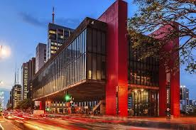
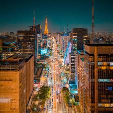
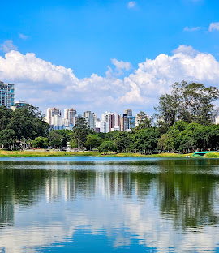
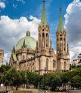
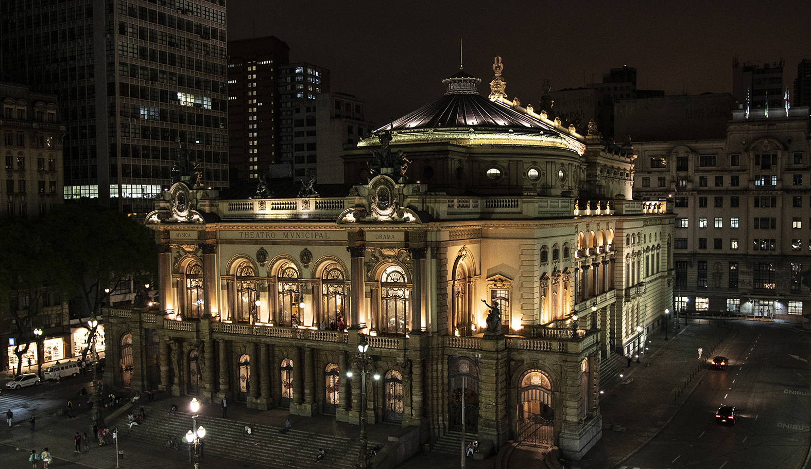
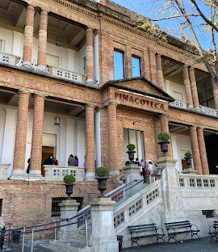

MASP

Fonte da foto: Acervo Oficial / Referência
O Museu de Arte de São Paulo Assis Chateaubriand é um dos centros culturais mais importantes do país, famoso por sua arquitetura com vão livre projetada por Lina Bo Bardi.
Visitar SiteAvenida Paulista

Fonte da foto: Melhores Destinos
O coração financeiro e cultural da cidade. Aos domingos, fica aberta exclusivamente para pedestres, ciclistas e manifestações artísticas.
Visitar SiteParque Ibirapuera

Fonte da foto: Parque do Ibirapuera Org
O parque urbano mais famoso de São Paulo, repleto de áreas verdes, ciclovias, museus projetados por Oscar Niemeyer e lagos artificiais.
Visitar SiteCatedral da Sé

Fonte da foto: Catedral da Sé Oficial
Um dos maiores monumentos neogóticos do mundo. Localizada no marco zero da capital, impressiona pela imponência de suas torres e cripta subterrânea.
Visitar SiteTheatro Municipal

Fonte da foto: Theatro Municipal SP
Inspirado na Ópera de Paris, o teatro é um dos marcos arquitetônicos da cidade e foi o grande palco da Semana de Arte Moderna de 1922.
Visitar SitePinacoteca

Fonte da foto: Pinacoteca Oficial
O museu de artes visuais mais antigo de São Paulo, focado na produção brasileira desde o século XIX até a contemporaneidade, cercado pelo Parque da Luz.
Visitar Site